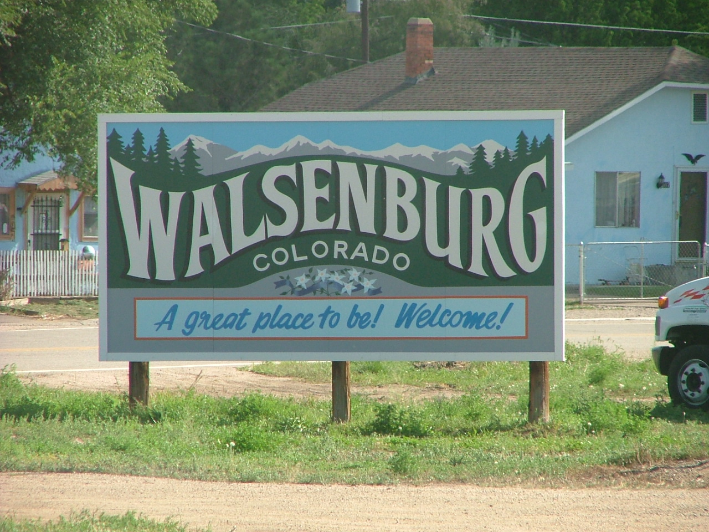

The Legend-News
What We Got Here
- Stuff. Collected information.
- Over the Double Nickel. An ode to spring.
- Previously, in The Legend-News. “The Earl-y Show”
- Song a’ th’ Month. “Old 30”
Stuff
From The Register: “ Your next car may be smarter than you ” An interesting article on self-driving cars. Skip to the caption of the first illustration for the C.W. McCall reference.
In the comics: the “Nancy” comic strip of April 12 . The current storyline, if you haven’t been following this strip, is how Sluggo and Nancy met. The man in the first panel is Phil Fumble, Fritzi’s boyfriend, who was recently reintroduced into the strip after not having been seen since 1968. ( Wikipedia )
A photograph from Crispy Critter Ruth Kauffman. I said, “I heard that there’s a bunch of wild women there.” Ruth replied, “They all make love like a buffalo herd; I bet you wish you knew one.”

Bob Chavez, father of 12-year-old (and new Crispy Critter) Alex Chavez, said that Alex had a question for Bill:
I“ve been a fan for some time and am proud to share that I am molding the mind of my 12-year-old son, who likes his modern pop music but is being exposed to your music. He especially loves the story in “Classified”.
But as we listen to your music, there is one question that continually pops up for both of us. In “Black Bear Road”, the line is “pay no attention to the guitar there”. What my son Alex and I would love to know is if that guitar entrance really is a mistake in the song, or if that was planned. Either way, we love it.
For the forgetful, here’s a clip of the song. Notice the guitar at about 11 seconds:
(If you don’t see a music controller above this line, you can download the clip .)
Bill’s reply: “Yes, the guitar player did come in too early but we decided to leave it in for its comic value.”
In the last week of April 1988, according to the Sioux City Journal of April 28, 2013 (at the bottom of the page):
Also in the Sioux City Journal: not an actual item about C.W. McCall, but it does involve a pickup truck and Sloan, Iowa.
2013 is the 100 th anniversary of The Lincoln Highway . Drive “Old 30” for a few miles.
Worth repeating: The Midwest Pride In Your Ride Truck and Tractor Show will be held on the first weekend of May (3rd and 4th) at the Tri-State Raceway in Earlville, Iowa. Earlville is about eight miles west of Dyersville, home of the “Field of Dreams”, and about 35 miles west of Dubuque. There should be C.W.McCall-autographed items available, if my sources are correct.
Talk like a trucker . C’mon, you know that you want to. Thanks to Edward Green of The Trucker’s Report .
New Crispy Critter: Fox Northstar (AKA Donn Osier), of Bennington, Vermont.
Not to be neglected: Bill Fries, of Ouray, Colorado (you might have heard of him) is recovering from open-heart bypass surgery.
The latest review on The Thinking Chick’s Guide: Zero Dark Thirty (2012).
Over the Double Nickel
Winter long
Spring is here
Dandelions
Augh! Need beer.
Looking for real estate in northern Cook, Lake, Kane or McHenry Counties in Illinois? Ask Tony Bellino.
Previously, in The Legend-News
From the 2006 November 11 issue of The Legend-News.
The Earl-y Show
Chas. Ames was watching the November 2 episode of the NBC-TV comedy “My Name Is Earl“, when Earl, his brother Randy, and their friend Joy spied on a neighbor in their trailer park, and used walkie-talkies to communicate; which lead to an impromptu performance of “Convoy“.
The trio is crouched behind a bush, preparing to initiate their plan.
EARL: You guys ready to do this?
RANDY (into walkie-talkie): Breaker one-nine, this here’s the Rubber Duck. You gotta copy on me, Pig Pen, c’mon?
EARL: Nice, “Convoy“. They should make more movies outta country songs.
JOY (pauses for a moment, then begins to sing): We got a great big convoy, rockin’ through the night.
EARL and RANDY join in.
ALL THREE: Yeah, we got a great big convoy, ain’t she a beautiful sight? Come on and join our convoy, ain’t nothin’ gonna get in our way. We’re gonna roll this truckin’ convoy across the U. S. A.
Convoy! (pause for four beats)
Convoy!
EARL (into walkie-talkie): Ten-four, Rubber Duck. Pig Pen’s got his ears on.
RANDY: You gotta push the button down.
Later, when EARL and RANDY arrive at the Sisters of Redemption, a convent:
EARL: What is this place, a convent?
RANDY: We got a great big convent, truckin’ through… nuns! Nuns! (As two sisters approach them.)
“My Name Is Earl” at IMDb: “ Made a Lady Think I Was God ”.
PFG Performance: full-service auto repair in Crystal Lake, Illinois.
Song A’ Th’ Month
“Old 30”
(Bill Fries, Chip Davis)
From the album
Wolf Creek Pass
She was mud and sand and concrete
Mixed with water made a’ tears
From the rivers runnin’ down the Great Divide
She was three thousand miles
Of rockin’, rollin’ highway
A million mem’ries long and two lanes wide
Far across the wide Missouri
To the ol’ Wyomin’ line
From the Jersey shore to San Francisco Bay
She was known to all the truckers
As the mighty Lincoln Highway
But to me, she’s still Old 30 all the way
Now the Interstate goes screamin’ through the backyard of her life
But it just don’t send those shivers down my spine
So before I take that exit
To the Highway In The Sky
I’m gonna take Old 30 one more time
She was radiators boilin’
In the burnin’ summer sun
And a blizzard blowin’ wild across the plains
She was tumbleweeds a-rollin’
In the gentle winds of Fall
And the lights of old Grand Island in the rain
She was mud and sand and concrete
Mixed with water made a’ tears
From the rivers runnin’ down the Great Divide
She was three thousand miles
Of rockin’, rollin’ highway
A million mem’ries long and two lanes wide
Now the Interstate goes screamin’ through the backyard of her life
But it just don’t send those shivers down my spine
So before I take that exit
To the Highway In The Sky
I’m gonna take Old 30 one more time
One more time
If you need any painting or construction done in northern Illinois (and elsewhere),
talk to Ivan at
Diamond Painting Services ’n’ Construction.
The Legend-News is published on an as-needed basis by TechRen Enterprises. Copyright 2013 TechRen Enterprises. Send subscription requests, unsubscribe demands, complaints, kudos, suggestions, news and other contributions to Legend-News@cw-mccall.com. Almost everything in The Legend-News has been written by Ed. Floden, except for the stuff that he blames on someone else. “I’m pretty sure Peter Sellers is dead. He was Inspector Gadget, wasn’t he?”